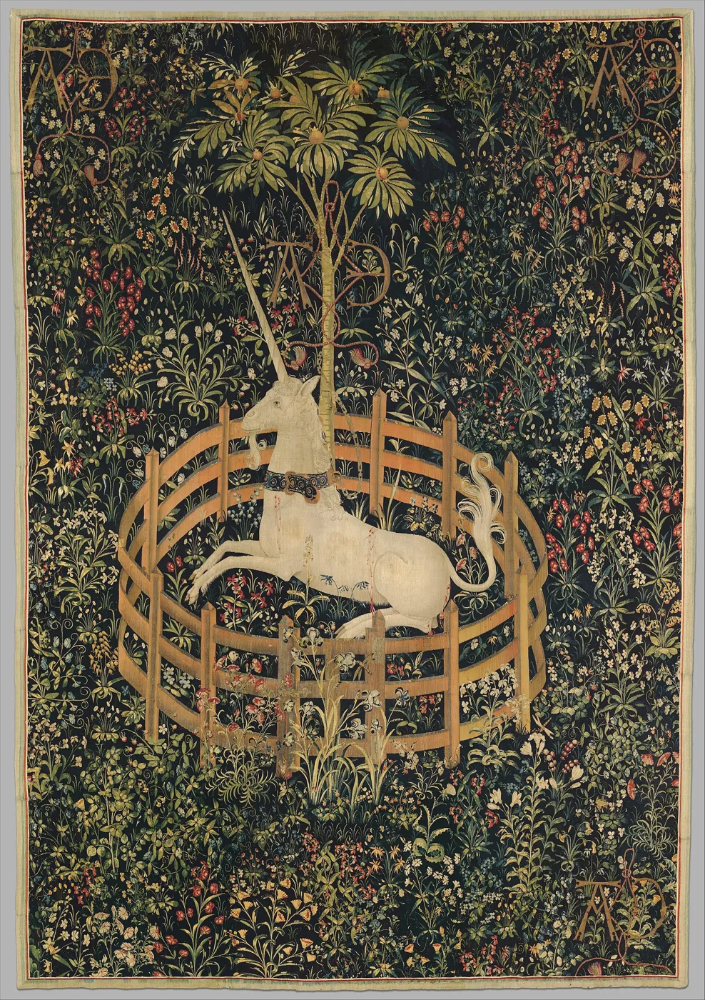

Hebrew Bible
The Re’em
A powerful wild beast of the Hebrew scriptures. Greek translators rendered it monokeros, “one-horn”, and so the King James Bible of 1611 is full of unicorns. Scholars now think the re’em was the aurochs, the great wild ox.
A field guide to the animal that never was
Four thousand years of seals, scrolls, tapestries, thrones and stories — about a creature no one has ever seen, and no one has ever forgotten.
O dieses ist das Tier, das es nicht gibt.
“Oh, this is the creature that does not exist.”
And yet it exists everywhere: stamped into clay in the Indus Valley, described by Greek physicians, hunted across medieval tapestries, chained to the royal arms of Scotland, and galloping through novels, films and toy boxes. This is its story — where it came from, what it meant, and why it endures.
II · Across cultures
Almost every great civilization imagined a one-horned animal. They did not agree on what it was — only that it was rare, strong, and meant something.
Hebrew Bible
A powerful wild beast of the Hebrew scriptures. Greek translators rendered it monokeros, “one-horn”, and so the King James Bible of 1611 is full of unicorns. Scholars now think the re’em was the aurochs, the great wild ox.
Persia & the Arab world
No gentle maiden-tamer: the karkadann of Persian and Arabic writers is a ferocious, rhinoceros-like monster that can skewer an elephant. In some tellings only the ring-dove can calm it, perching unharmed on its horn.
China
A scaled, gentle chimera whose appearance announces a sage ruler or a great birth. Legend says a qilin visited Confucius’ mother before he was born — and that the slaying of one, in 481 BCE, made the old master lay down his brush.
China · Korea · Japan
A one-horned beast of justice that can tell the honest from the guilty — and butts the guilty with its horn. As the haetae of Korea and the kaichi of Japan, it still guards courts and palaces.
Medieval Europe
Unicorn horn was the ultimate antidote, sold as powder and carved into cups that would sweat at the touch of poison. Queen Elizabeth I’s horn was reputedly valued at £10,000 — the price of a castle. Nearly all were narwhal tusks.
Scotland
Proud, untameable and pure, the unicorn is Scotland’s national animal. On its coats of arms it is shown chained — a creature so wild that only a Scottish king could hold it.
III · Close reading
The Unicorn in Captivity, woven around 1495–1505, is perhaps the most famous unicorn image in the world. Every detail is a sign. Select a point of light to decode it.

IV · Gallery
Five centuries of unicorns in thread, paint and stone. Select any work to see it larger.
V · In fiction
Once it stopped being a real animal, the unicorn became something better: a character.
Lewis Carroll
The Unicorn meets Alice and proposes a bargain: “If you’ll believe in me, I’ll believe in you.”
Rainer Maria Rilke
A sonnet to the creature that does not exist — fed not on grain but on the possibility that it might be.
C. S. Lewis
Jewel the Unicorn, King Tirian’s dearest friend, rides into the final chapter of Narnia.
Shel Silverstein · The Irish Rovers, 1968
Why are there no unicorns? Because they were too busy playing to board Noah’s ark.
Peter S. Beagle
A unicorn learns she may be the last of her kind and sets out to find the others. Animated in 1982 — a cult classic ever since.
Madeleine L’Engle
Charles Wallace rides Gaudior, a winged unicorn, through the winds of time.
Ridley Scott
A tiny origami unicorn left on the floor — and, in the 1992 Director’s Cut, a unicorn dream — asks whether Deckard is human.
Hasbro
Unicorn ponies gallop into toy boxes — and, decades later, into one of the most devoted fandoms on the internet.
Ridley Scott
The Lord of Darkness plots to destroy the last unicorns and plunge the world into eternal night.
Filmation
Swift Wind, a winged unicorn, carries She-Ra into battle against the Horde.
J. K. Rowling
In the Forbidden Forest, unicorn blood can keep you alive — at the cost of a cursed half-life.
Illumination
“It’s so fluffy!” — a carnival prize unicorn becomes a meme for the ages.
Aileen Lee
The venture capitalist names billion-dollar startups “unicorns” — rare, magical, and much hunted.
Pixar
In a world that has forgotten magic, unicorns have become feral, bin-raiding pests. A sad, funny fall from grace.
VI · The Oracle
Eight claims. Some are history, some are legend. Choose wisely.